Resource Management Tool
BackSections
IntroductionUser Stories
Kanban Board
Database Migration Scripts
Developing the Person Class Using TDD
Requesting Leave
Leave Requesting Submission Form
Leave Action Table
Leave Calendar
Introduction
As the ELM project was still in its early stages, there were few chances to write any code in earnest. I raised this with my manager, expressing my concern that this position would not afford me opportunities to gain the experience necessary to become a well-rounded software developer.
I asked to be placed either on a more mature project, or on a new but smaller scoped project, so as to be in a position to code sooner. My manager said that they, and other resource managers in the department, had been looking to replace an expensive piece of software used to monitor the projects' staff were working on, alongside their annual leave entitlement and absences.
They wanted it to be functionally almost the same as the old piece of software, with the option to add or remove features as the project progressed and as requirements changed. With that in mind, I began work on the Resource Management Tool.
User Stories
Following discussions with resource managers (the primary users of the application) I translated business requirements into user stories to help inform on required software features; an example can be seen below. These were reviewed and approved by the resource managers. I broke larger user stories into smaller ones for adding to the backlog. Each piece of work has acceptance criteria and steps to carry out each action from a user's point of view.
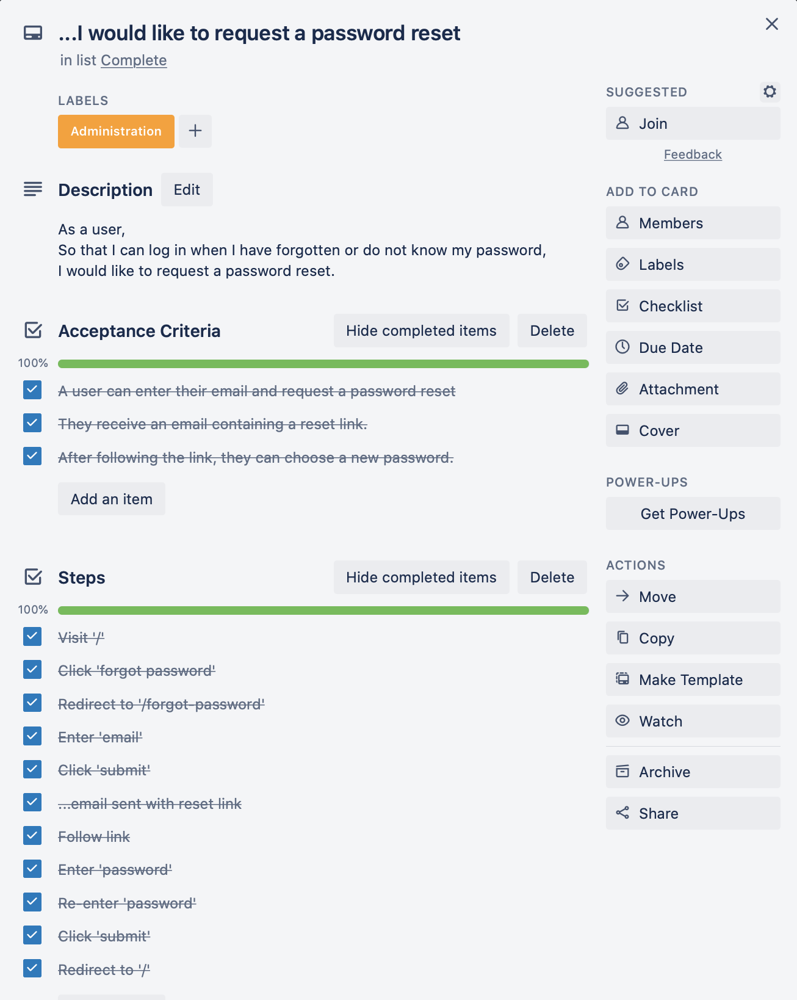
Kanban Board
To monitor the project throughout its development, I created a Kanban board using Trello; it was important for me to continue to work with agile processes despite this being a solo project. With it, I could keep track of work completed, in review, in progress, or in the backlog.
I grouped related functionality into epics and labelled them accordingly. Shown below, each task has been labelled according to its epic.

As I began to develop each application feature to meet each user story, I would move them to 'In Progress'. Once I had completed the user story and all continuous integration tests were passing, I would move the user story into 'In Review', and have a colleague complete user acceptance testing to confirm the feature had been delivered as requested and move the user story into 'Complete', before I completed the pull request to push the codebase to the master development branch and then deployed.
At the end of an epic, I met with resource managers to gather feedback and adjusted requirements and user stories as necessary. The Kanban was a useful tool throughout the project – myself, my manager, and other project stakeholders (resource managers and higher), could see how the project was progressing, and could estimate timelines for each feature based off of those that had been delivered.
Database Migration Scripts
An early consideration for the project was how to ensure the structure of the accompanying database, and the data held in it, was kept up to date across each environment - development, test, and production.
I had previously used Sequelize, an Object-Relational Mapping tool for Node.js, to handle SQL database migrations as a project progressed. Migrations are scripts (in this case written in Sequelize syntax) to be run in sequence to allow a database to be rebuilt from scratch back to the current state. I was not happy with some of Sequelize's quirks and found it easier to write standard SQL queries.
It was important for me to have a process for dealing with migrations so that, during deployment to each environment, the database was recreated the same each time. Not having a process could result in additional work further down the line, having to create the database manually, or even having errors in my code that could be difficult to locate.
Once I had deciding that developing a new solution would be worthwhile, I identified the requirements and I worked on my own to develop the scripts using JavaScript; I created a class with a series of functions to check a given folder for SQL files, shown below.
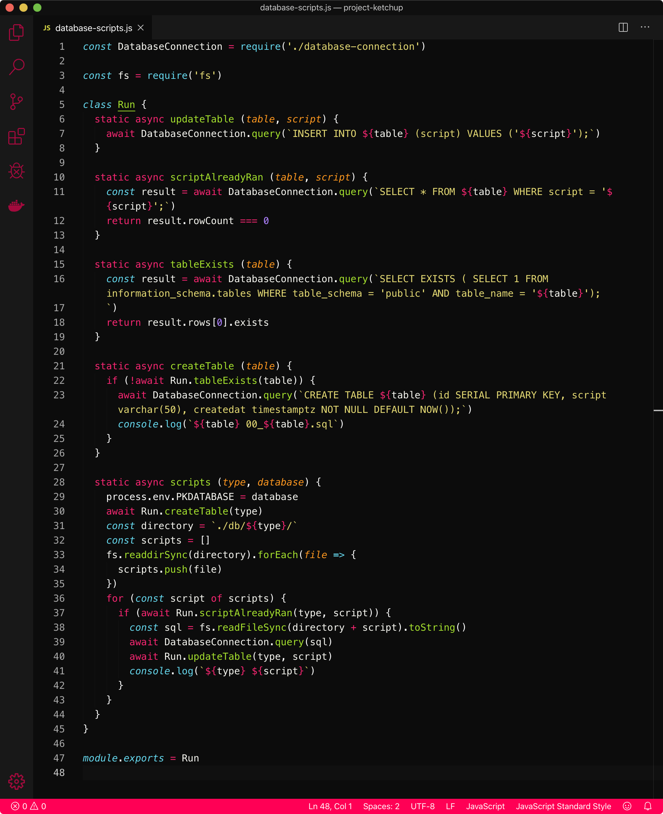
The given database would be checked to see which SQL files had already been run, and those that hadn't would then be run, updating the database to the most recent state. This class is reusable for both migrations and seeds, or any folder of SQL files, if you wanted to separate them out for some reason. Example uses shown below.
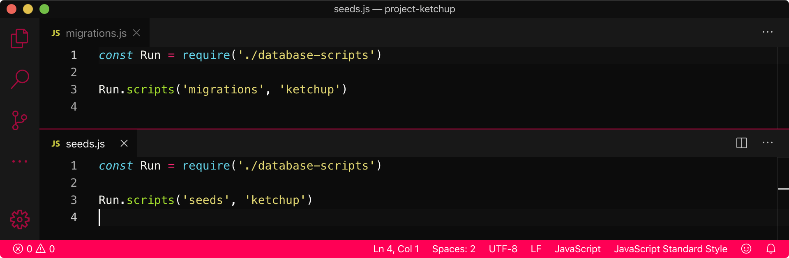
These scripts can be run manually with 'npm run migrations' or 'npm run seeds' in Terminal, but can also run autonomously when Travis.ci performs checks on the repository, and on deployment to Heroku, to ensure the live instance of the database matches that in the development environment. Travis.ci is a continuous integration service used to run scripts and tests prior to deployment. Heroku is a hosting service used to host the live application. The database itself was hosted on AWS, a service offering cloud storage.
Although this script was developed for this specific project to solve a problem, it can be used on future projects, by myself and colleagues, with very few changes required.
Developing the Person Class Using TDD
Each feature of the Resource Management Tool was created using Test Driven Development – the process of writing simple, failing tests, before writing code to pass those tests, refactoring the code, then repeating the process.
Shown below is the suite of tests for the Person class, written in Mocha (a testing framework) using Chai assertions (an assertions framework), and stubbing external classes with Sinon (a mocking/spying/stubbing framework.)
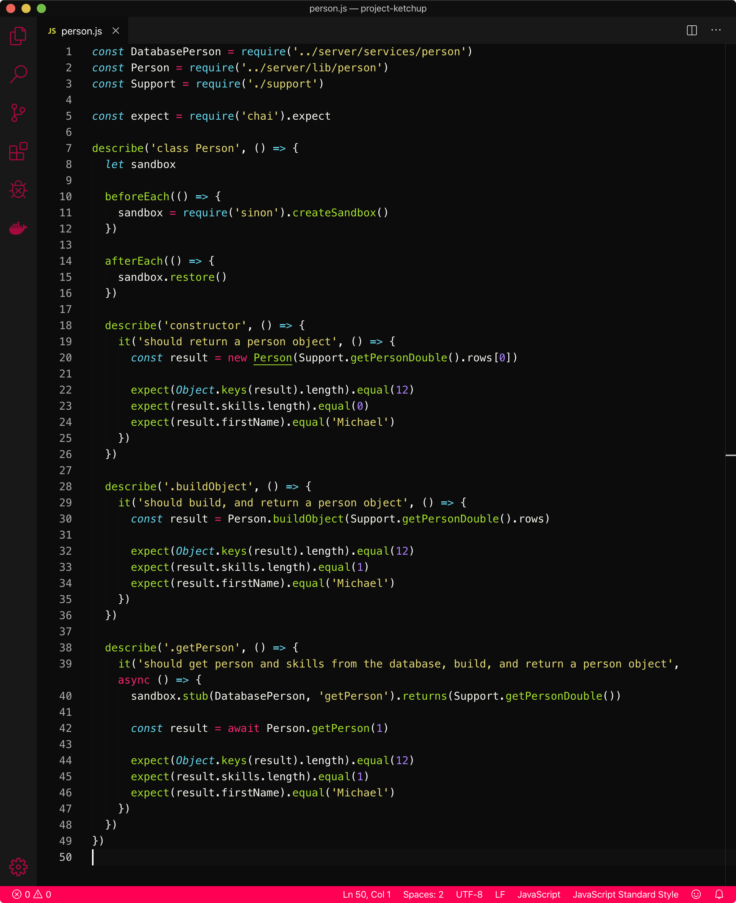
Within the context of the Resource Management Tool, the Person class allows for Objects to be created to represent system users, members of staff, resource managers, etc. These Objects could then be used to present and display information about the user on the web page, or be passed around by other functions elsewhere is the application. Shown below is the completed Person class.
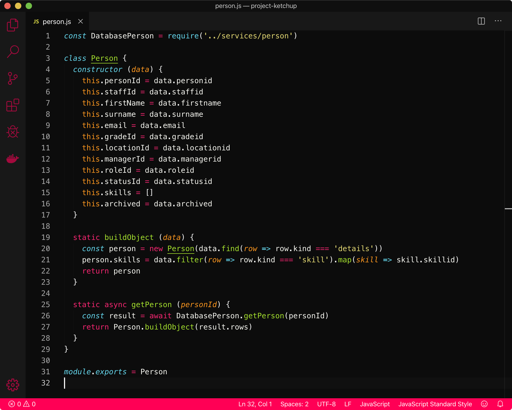
I initially wrote a simple test to ensure the function 'getPerson' could be called on the 'Person' class, once passing I updated the test to ensure there was a return value, then again to ensure correct data was being returned from a database query, which I later stubbed. The 'Person' constructor tests came next, first that a new 'Person' could be created, then that the 'Person' had the correct properties. The 'buildObject' function was born out of testing after the 'Person' constructor tests proved I could not get the desired outcome with my initial approach. After creating the 'buildObject' function with tests and getting the desired product of calling each function, all tests were passing and I had 100% code coverage, shown below.
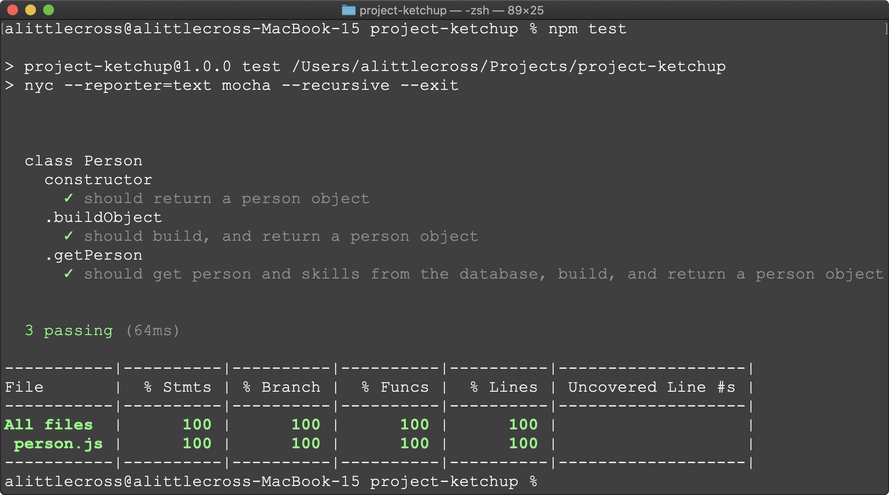
Developing features using TDD helped to ensure the code was in a constantly working state, this would aid in the development of future features, by myself and other colleagues working on the project. Having a suite of passing tests also helps to reassure stakeholders that a robust approach was taken during the development of their application.
Requesting Leave
Once I had completed all user stories relating to the administration of users, I began working on the 'leave' epic; this consisted of a number of user stories relating to requesting leave, approving and rejecting leave requests, and viewing the status of leave requests of an individual, or a team.
Leave Request Submission Form
The first logical user story to work on was the leave request submission form, shown below.
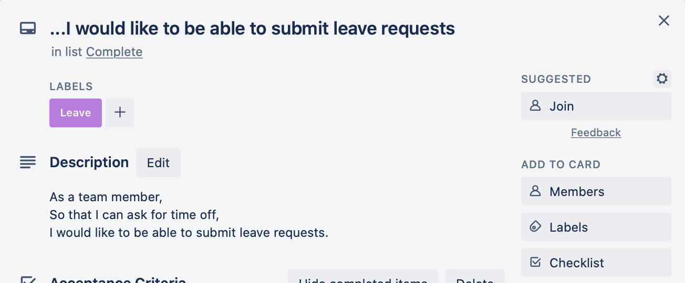
I developed the below user interface to allow a date, or a range of dates, to be entered, and a leave type and duration to be selected before the request is submitted.
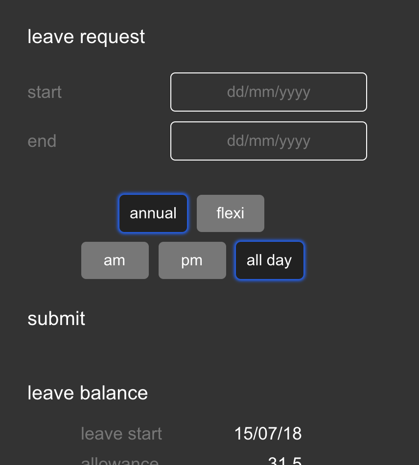
Buttons and active elements are clearly highlighted to assist the user. If users select 'am' or 'pm' the form adjusts so as to not expect an 'end' date and a 'half day' is calculated. Single, or date ranges, show the number of days selected; weekends and bank holidays are discounted from this total.
As a feature within a tool that all staff would eventually use on a daily basis, business context was a major consideration in designing the UI to make it intuitive, and meet the requirement of capturing all the data that was needed for a leave request.
To that end, I wanted users to be able to enter the dates using a date-picker. I researched a number of pre-existing date-pickers and decided to use the one available in the jQuery JavaScript library, as it was simple but extensible, allowing me to add the additional functionality I needed.
When a 'start' date was selected I wanted the 'end' date field to be restricted to only allow dates after the 'start' date, and similarly when an 'end' date was selected the 'start' date field would only allow dates before the 'end' date. The code I wrote to achieve this can be seen below.
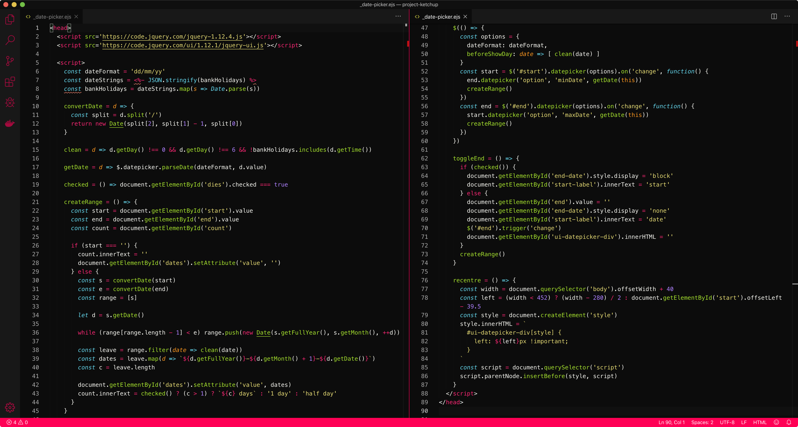
The date-picker was heavily redesigned to match the overall style of the app. If the user is using a browser that does not support JavaScript the form will continue to function, with the user being able to manually enter date(s). Shown below is a short demonstration of the user interface in action.
Leave Action Table
Of course, once a leave request has been submitted, it needs to be actioned. There were three user stories relating to this feature, shown below; one to approve requests, one to reject requests, and one to cancel/remove requests. I developed these in succession as the code and UI were closely related.
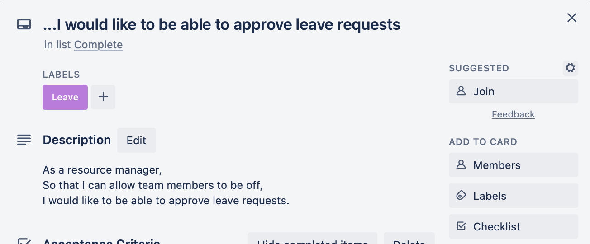
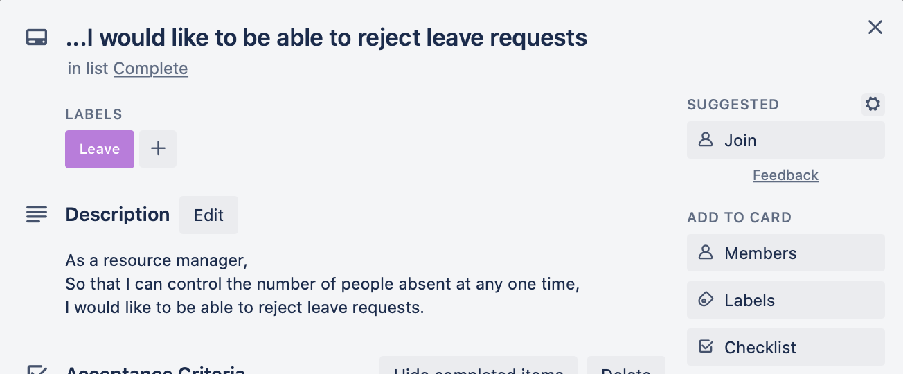
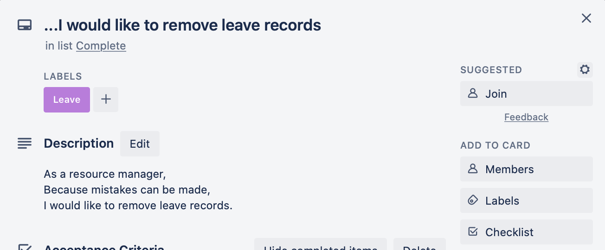
Shown below is the '/dashboard' route. As with all routes in the Resource Management Tool, it first checks that user details are stored in the session cache, shown on line 4; this is to ensure that the request to visit '/dashboard' is by a logged in user. If no user details are stored, the application re-directs to the login page, '/'. If user details are stored, they are used to collect data for presentation on the page; for example, on line 9, the 'personId' property of the 'user' Object in the session cache is used to get leave requests.
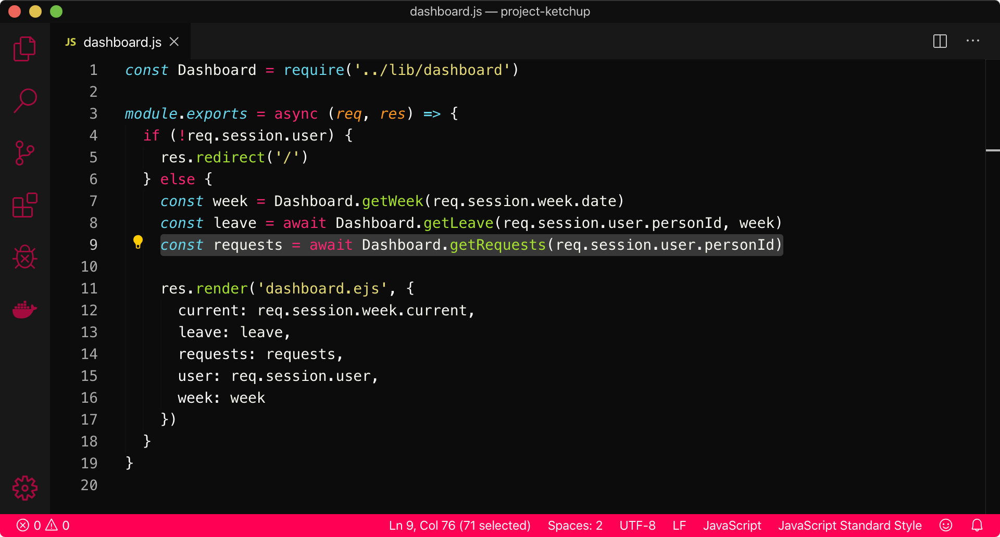
The first image shown below is the 'Dashboard' class, and highlighted is the 'getRequests' function. This calls a similarly named function on the 'DatabaseDashboard' class, shown in the second image, that contacts the database to return the requested data.
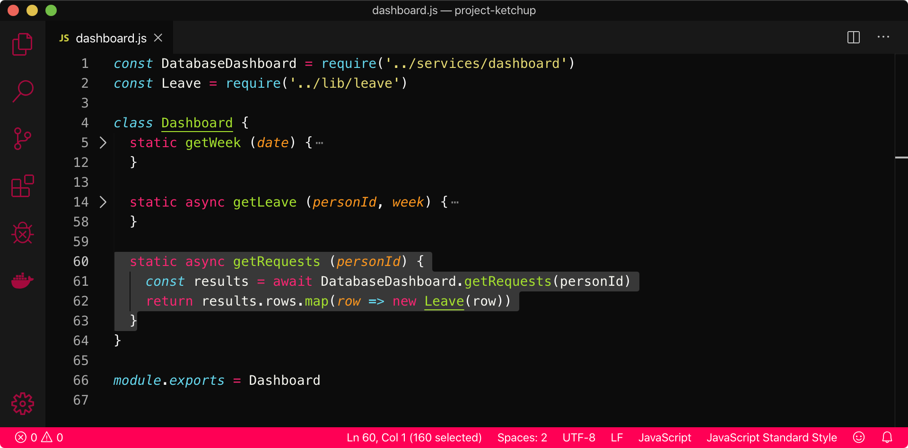
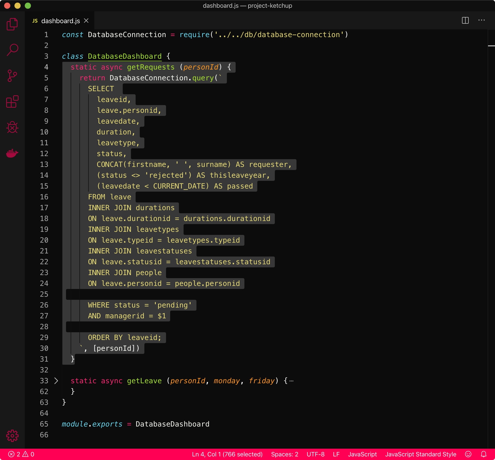
Once passed back to the 'Dashboard' class, the 'getRequests' function maps the results to an Array of 'Leave' Objects. This last section of code shows the 'Leave' class, highlighting the 'constructor', with all the properties required to build the table of leave requests on the dashboard page, along with the 'formatDate' function, used to take an ISO Date Object and convert it to a String in the desired format.
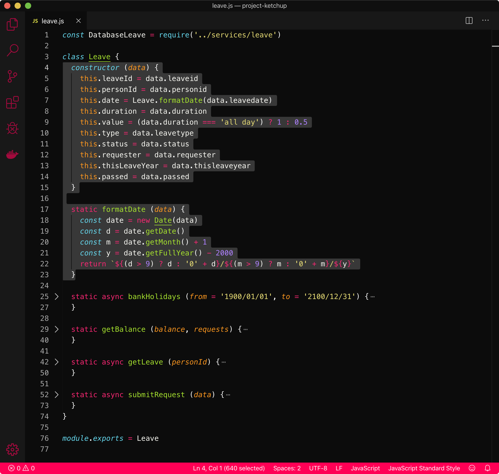
I developed the user interface so that outstanding leave request actions are displayed at the top of a resource manager's dashboard once they have logged in to the Resource Management Tool, as can be seen in the next two images.
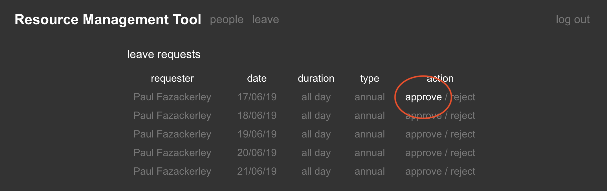
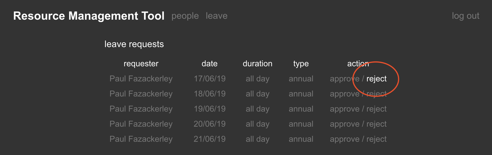
The interface is straightforward, only displaying relevant information to help decide on each leave request. Once actioned, the request is removed from the outstanding actions list. Requests are displayed in the order they were submitted, not by the date that was requested; this allows for requests to be actioned on a first come, first served basis.
The 'approve' and 'reject' buttons visit a simple route that takes each action and calls the 'changeStatus' query on the 'DatabaseLeaveAction' class, as can be seen below.
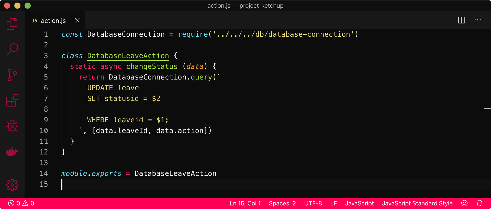
Previously actioned, along with outstanding leave requests, for a specific person can be found against their person record, displaying the status of each request, and ordered by the date that was requested, shown below. The information in this screen is only visible to resource managers.
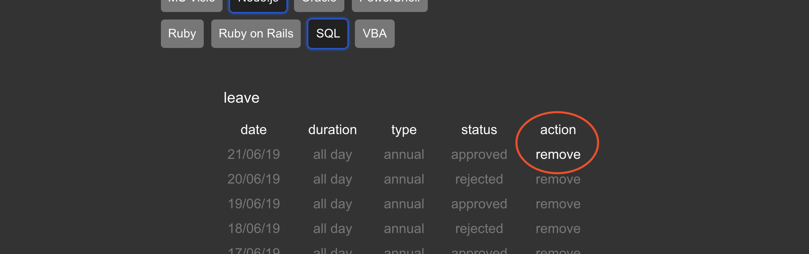
Like before, the 'remove' button visits a simple route that calls the 'deleteLeave' query on the 'DatabaseLeaveDelete' class, as can be seen below.
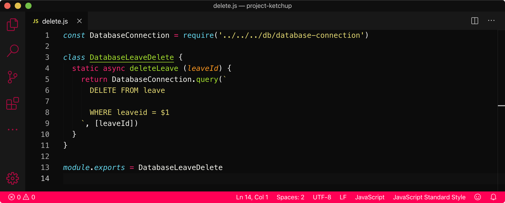
The code and the user interface work together to satisfy the user stories, delivering a consistent user experience across the application.
Leave Calendar
To tie the above features together, and visualise leave requests across the team, approved or otherwise, I tackled the user story covering the calendar view. This would allow all users to view the leave situation for their team and plan their leave accordingly.
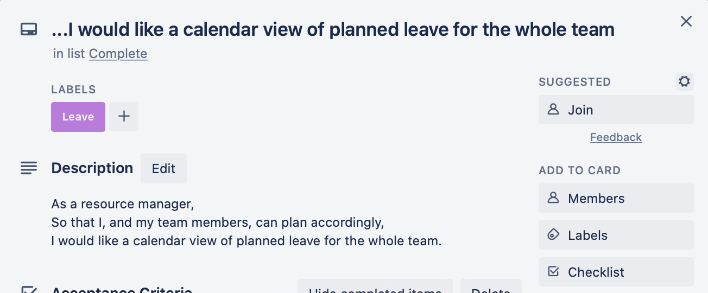
Shown below is the previously seen 'Dashboard' route, this time highlighting line 8, showing a call to the 'getLeave' function on the 'Dashboard' class.
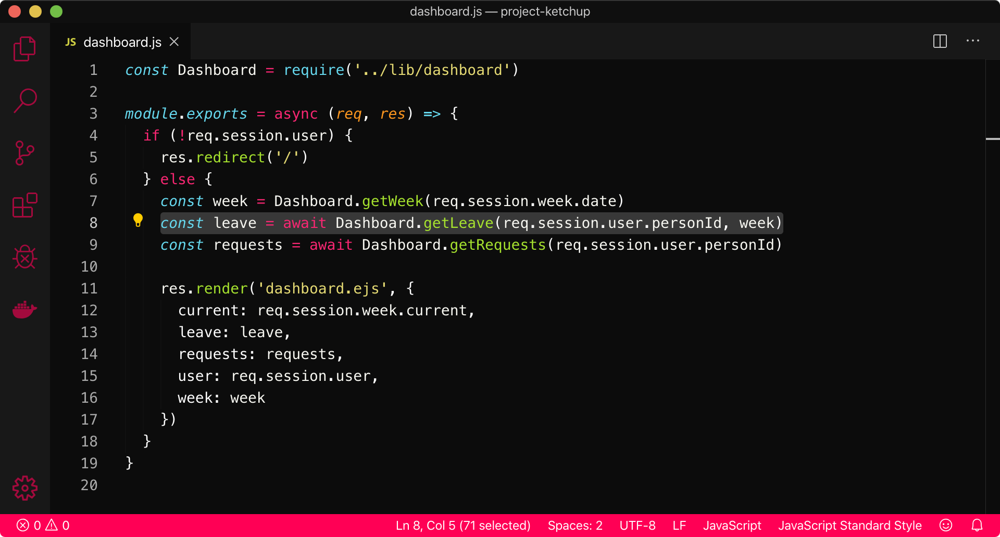
The 'getLeave' function performs a number of transformations on data returned from the database, shown below. The first step is to establish a 'weekdays' template, seen on line 15; this is an Array of seven elements, one for each day of the week. On line 16, the 'bankHolidays' function is called on the 'Leave' class to retrieve from the database any bank holidays between the two arguments in the function call. Lines 18 to 24 iterate through the 'bankHolidays' results and map a bank holiday Object to the respective day of the 'weekdays' template; all of this was to ensure that in the calendar, every member of the team would be shown as absent that day.
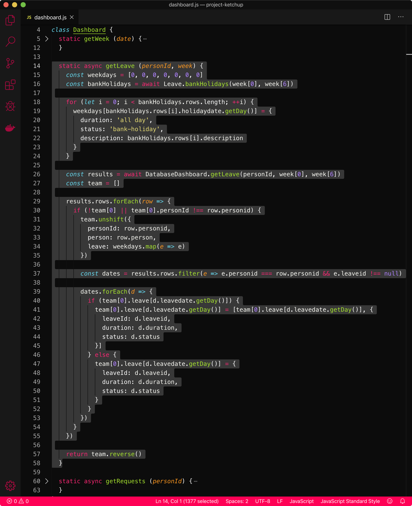
After bank holidays are dealt with, the 'getLeave' function calls a similarly named function on the 'DatabaseDashboard' class (seen above on line 26) to contact the database to return the requested data. The 'personId' of the currently logged in user is used to retrieve from the database everyone who shares the same manager, along with each of those people's leave requests, for a given 7-day period, shown below.
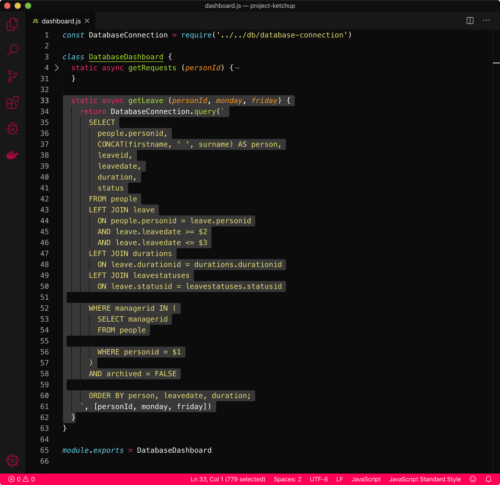
Referring back to the 'getLeave' function on the 'Dashboard' class, the return from the database query is stored, on line 26, then from lines 29 to 55, transformed into a two-dimensional Array, the outer Array representing people and the inner Array representing days of the week; if a person had leave for a specific day that would be represented with an Object displaying status and duration. This two-dimensional Array was passed through the route to the view then iterated through to build a html table, as shown below.
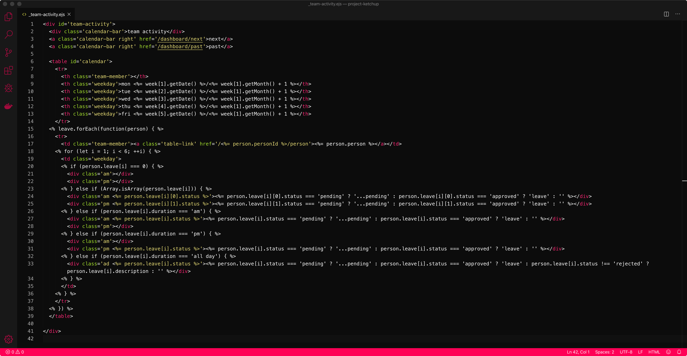
Shown below, the 'past' and 'next' buttons change the dates of the 7-day period passed to the database query, and repeat the above steps to render that specific week on screen, providing the facility to go back and forth week by week, displaying each person's leave requests, duration, and status. A check is made each time the route is visited as to whether the week being queried is the current week and the visibility of the 'current week' button is changed accordingly.
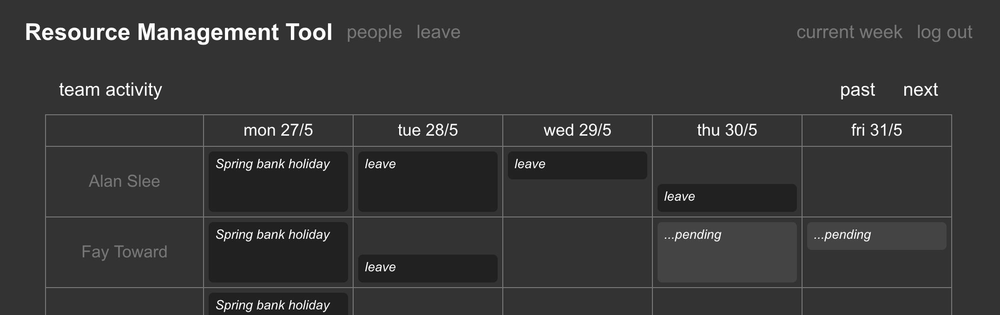
This collection of features was well received by colleagues, who provided feedback whilst acceptance testing, as shown below. As one of the main features for the app, stakeholders were very pleased with the calendar as it would help all users plan their time off, and help resources managers to keep track of their team.
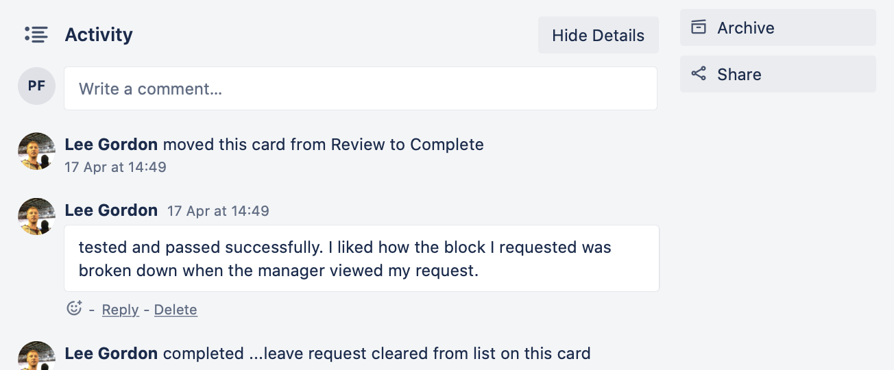
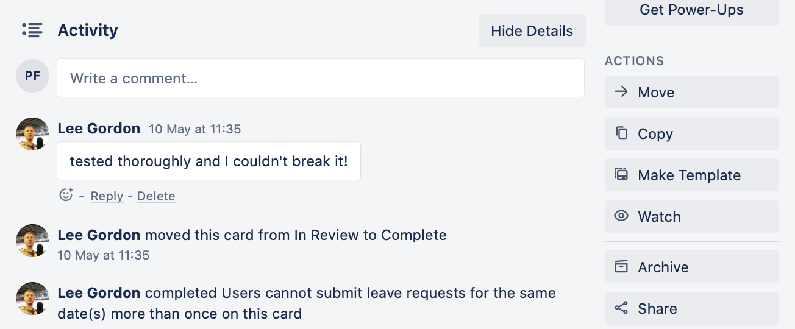
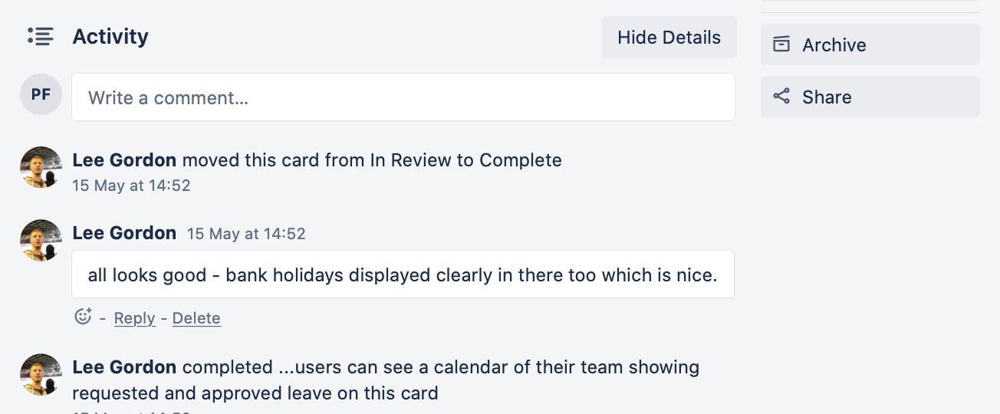
Back